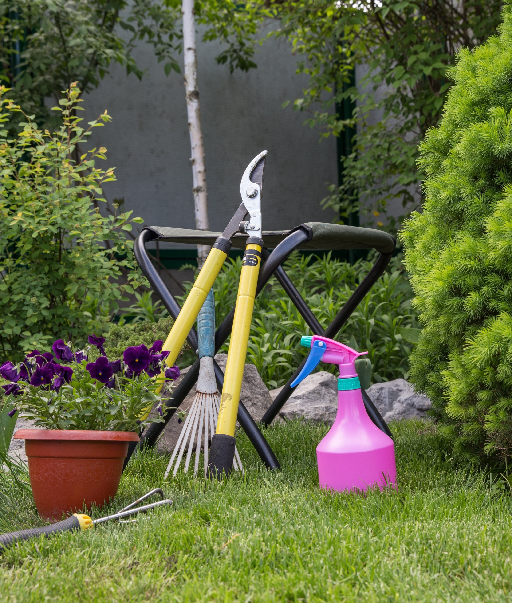
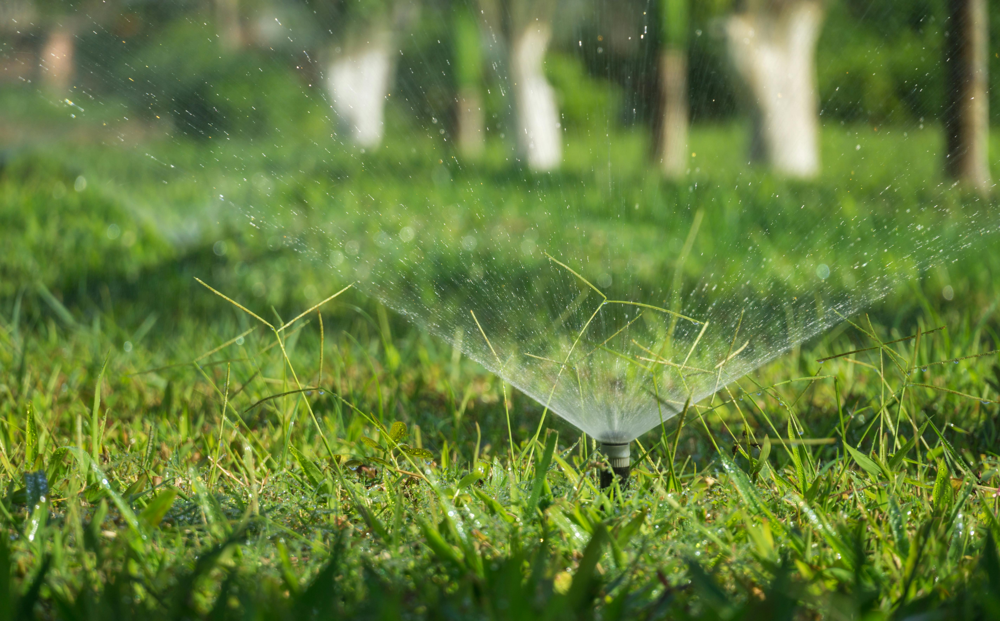
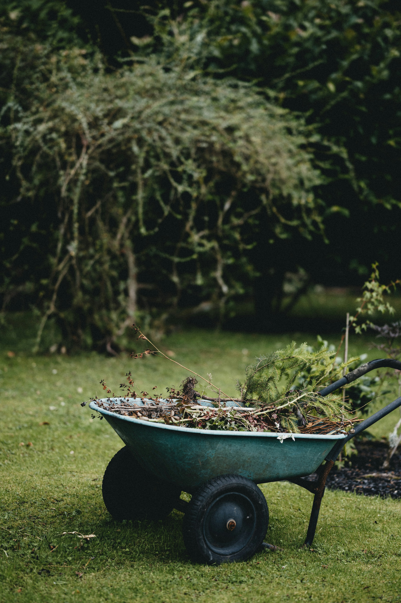
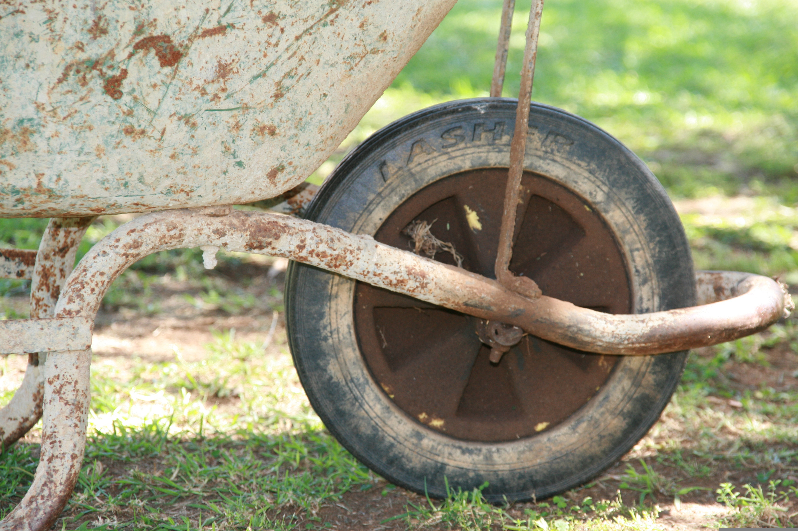
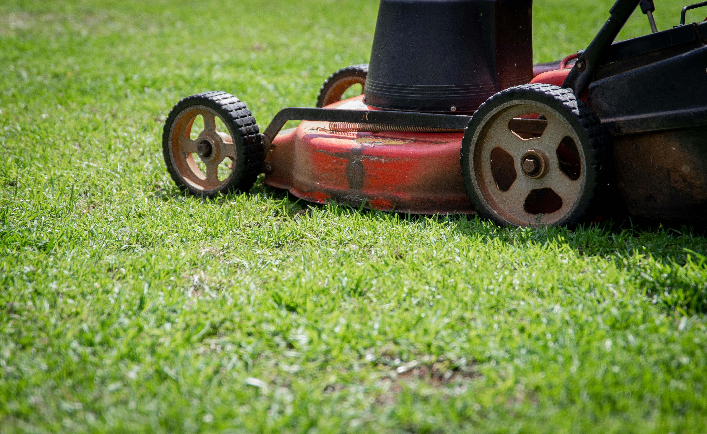

Mantenimiento integral
Visitas y tareas para plantas, bordes y detalle general
Solicitar información
Diapositiva 1 de 4
Confirmamos visita o llamada para definir alcance y tiempos.
Mantenimiento, césped, limpieza y riego con tareas claras por etapa.
Revisamos resultados y ajustamos frecuencia según temporada.
Mantenimiento integral · Césped · Limpieza · Riego
Qué ofrecemos
Cuatro líneas de trabajo que se complementan: planificación, ejecución y seguimiento para que tu espacio verde se mantenga en buen estado durante todo el año.

Planificamos visitas y tareas para que tu jardín se mantenga en orden: salud de las plantas, bordes, mulch y detalle general. Es la base para que césped, limpieza y riego rindan mejor durante todo el año.
Solicitar informaciónAltura de corte adecuada, bordes definidos y atención a zonas con poco sol o pisoteo. Trabajamos el césped como parte del mantenimiento integral: verde uniforme, sin encharcamientos ni malas hierbas dominantes.
Solicitar información
Retiro de hojas, ramas y residuos vegetales; desmalezado y preparación de superficies antes de siembras o mejoras. Dejamos el terreno listo para regar, plantar o disfrutar sin escombros acumulados.
Solicitar informaciónDiseño e instalación de riego por aspersión o goteo según tu jardín y clima. Programación para ahorrar agua y horas de trabajo manual. Complementa el mantenimiento integral y el cuidado del césped con un riego constante y eficiente.
Solicitar informaciónConvertimos tu jardín en un espacio cuidado y ordenado, con visitas planificadas, seguimiento real y soluciones claras para cada etapa.
Para espacios que deben verse bien todo el año, sin que el jardín se vuelva una carga de tiempo y coordinación.
Agenda una visita y recibe un plan de trabajo acorde a tu espacio. Escríbenos y coordinamos hoy.
Consejos alineados con mantenimiento integral, césped, limpieza y riego

Qué revisar cada mes para no acumular trabajo ni gastar de más en correcciones…
Cómo coordinar el riego con el sistema instalado y el mantenimiento del terreno…

Retiro de materia orgánica y por qué mejora el riego y el césped después…

Zonas, presión y programador: lo esencial antes de presupuestar…
Cómo encajan las visitas cuando quieres todo lo que tu jardín necesita…
Plazos, frecuencia de visitas y qué incluye un servicio completo de jardinería…
Cuéntanos qué necesitas y te respondemos por WhatsApp para coordinar visita, alcance y tiempos.
Contactar por WhatsAppAtendemos consultas y cotizaciones en el mismo chat.